2.1 Conección desde QGIS a PostgreSQL
2.1.1 Crear Conección
Para poder conectarse a PostgreSQL o a cualquier base de datos, debemos crear la conección desde QGIS, para eso, tenemos que indicarle los siguientes datos:
- IP/URL del Servidor
- Credenciales
- Usuario
- Clave
- Nombre de la base de datos a la cual nos conectaremos
- Puerto, usualmente es el 5432 para PostgreSQL pero puede cambiar dependiendo del servidor
Para comenzar vamos a QGIS y seguimos los siguientes pasos, los cuales solo debemos hacer la primera vez, siempre y cuando elijamos recordar el usuario y la clave, en caso de no recordarlos, cuando queramos conectarnos nos va a pedir nuevamente el usuario o la clave dependiendo de que le indicamos que recuerde.
2.1.1.1 Abrir interfaz para añadir mapa Postgis
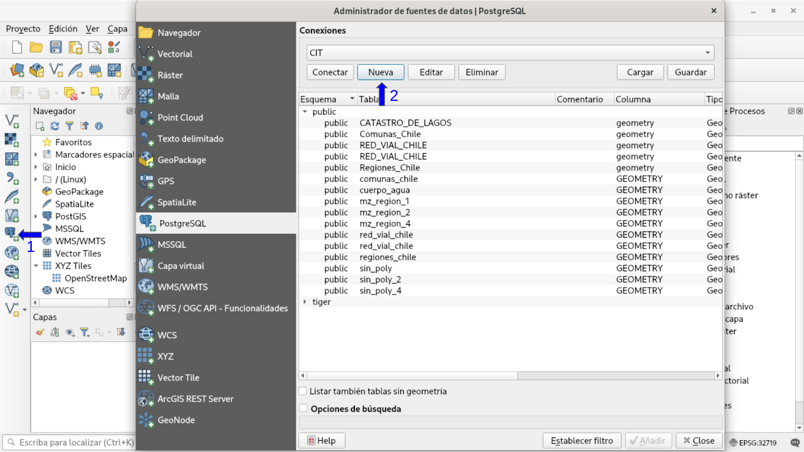
En el panel de herramientas izquierdo hacemos click en el icono de PostgreSQL
Hacemos click en “Nueva” para crear una conección a una base de datos de un servidor
2.1.1.2 Ingresar datos del servidor
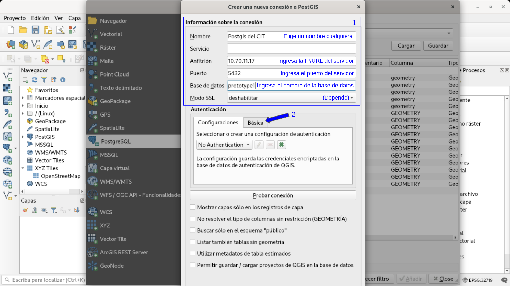
Debemos indicar dónde se encuentra el servidor, estos datos tenemos que tenerlos antes, si no los tienes consultalos para poder avanzar.
El único punto que debemos tener consideración es en el Modo SSL.
2.1.1.2.1 SSL y Seguridad de la información
¿Qué es el modo SSL? Antes de entrar en el SSL, vamos a ver como funciona el internet sin SSL, ya que no todas las páginas lo usan.
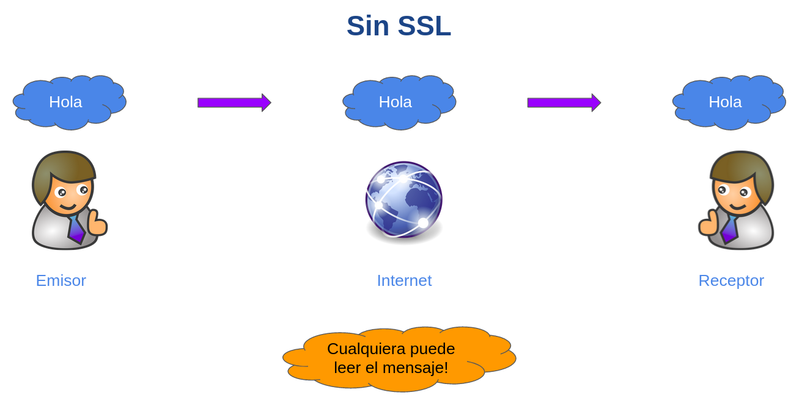
Cuando nos comunicamos con un servidor o cualquier otro dispositivo de internet o alguna red, todo lo que hacemos, escribimos, posteamos, todo se envía al internet, y como vemos todos los datos están expuestos, debido a eso, para cuando se usan datos sensibles como la clave de una cuenta bancaria, se usa una conexion llamada SSL.
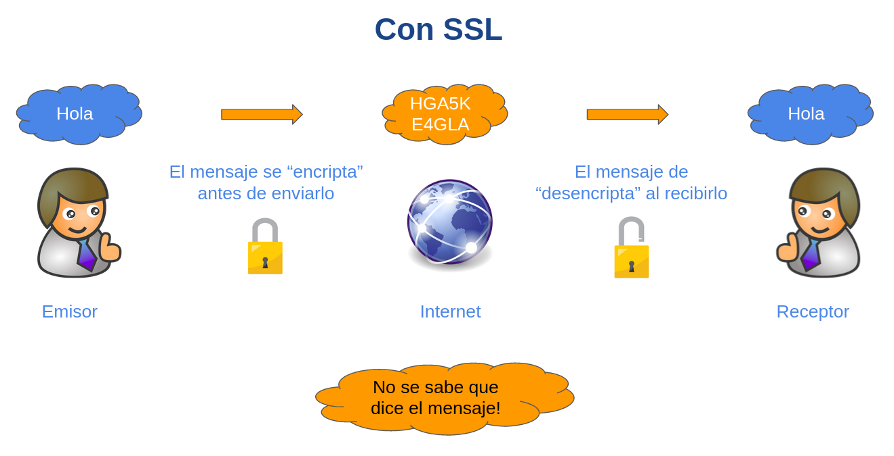
El modo SSL, “encripta” datos, los transforma en algo que al leerlos no se sabrá que dice, y luego se los envía al destino, para finalmente este pueda “desencriptarlo” y recuperar el mensaje original, el “cómo” es este proceso no se detallará, ya que existen múltiples algoritmos mezclados con tecnología y matemática con tal de asegurar lo más posible que los datos no puedan ser recuperados excepto por el emisor y receptor del mensaje.
Este modo es ideal cuando trabajamos con datos sensibles, sin embargo, por más seguro que sea, tiene un precio, tiempo y poder computacional con tal de “encriptar” y “desencriptar”, y mientras con más datos trabajemos, mas lento sera este proceso, debido a ello únicamente en algunas circunstancias es posible trabajar con datos sensibles sin SSL.
Si estamos trabajando desde la red del trabajo, osea tenemos el servidor de PostgreSQL al lado nuestro, o estamos usando algún servicio como VPN o red privada, si tenemos alguna opción que da seguridad a nuestra red y conexión, podemos evitar usar el modo SSL.
Si estamos sin protección alguna, o fuera del área de trabajo, el modo SSL es obligatorio, ¿qué pasa si no uso SSL y estoy en un lugar público?
En esencia, sin SSL cualquiera con conocimientos de TI podrá leer todo lo que hagas y escribas en la red, no es problema si lo leen personas del trabajo en caso de ser información pública a la empresa, pero en un lugar público conlleva:
- Posible robo de credenciales del servidor
- Posible robo de información del servidor
- Posible alteración de la información enviada o recibida al/del servidor
- Posible hackeo al servidor
“Esto me da miedo, nunca me he preocupado por usar SSL, no sabía que existía y he entrado al banco y mail ¿como no me han robado antes mis datos?”
Es por que en el internet, SSL hoy en día es un estándar, en este tiempo al menos toda página que tenga datos sensibles usará SSL por defecto, incluso páginas que tampoco tienen datos sensibles lo usan, de esa manera te puedes conectar de forma segura incluso en lugares públicos.
Cuando entras a una página web puedes ver lo siguiente.
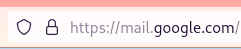
El candado indica que estás navegando por SSL y que la conexión es segura, si alguna vez navegamos a una página y el candado no esta, o esta rojo o el navegador indica “La página no es segura”, el posible que estén tratando de robar información, es uno de los métodos preferido para robar por ejemplo, cuentas bancarias.
Aun así, no todas las páginas de ese tipo son intentos de robos, puede que la página sea oficial, pero se les olvidó renovar el certificado, pero como no podemos distinguirlo de un robo de información o similar sigamos el siguiente criterio.
Únicamente escribir información sensible si la página web: * Usa SSL osea que el candado esté * Que el candado no este rojo o con alguna advertencia * Sin advertencias del navegador
“Da lo mismo que la página que veamos se parezca al banco, al mail o similar, confía más en el candado SSL que a lo que ve la vista. Confía más en la tecnología de criptografía o encriptación antes que la apariencia.”
¿Que tan segura es la criptografia?

2.1.1.3 Ingresar credenciales
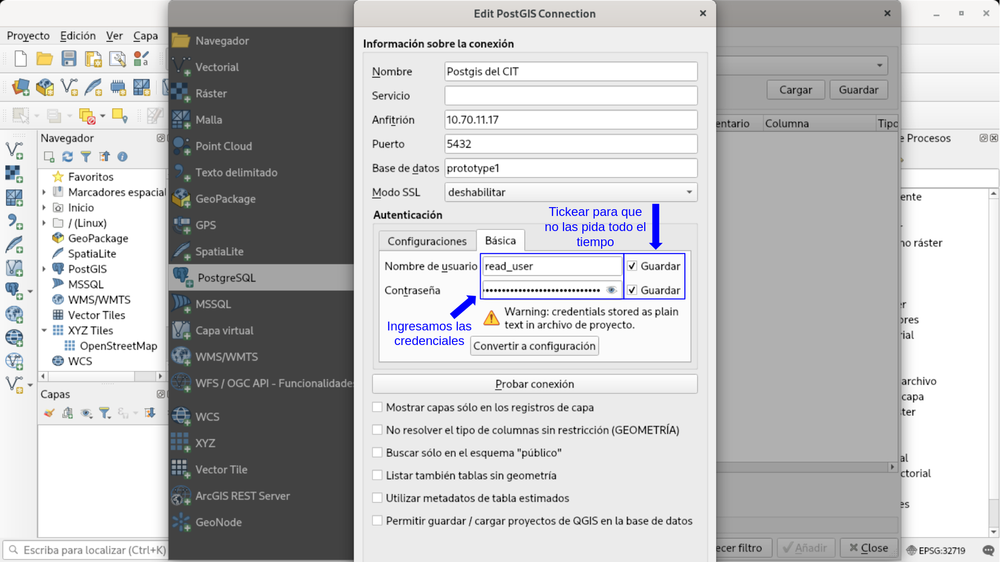
En este paso vamos a ingresar el usuario y la clave del servidor, además, si lo vamos a usar de forma continua podemos tickear “Guardar” para el usuario y la clave, ya que por cada intento de conexión solicitará los datos no guardados.
2.1.1.4 Probar la conección
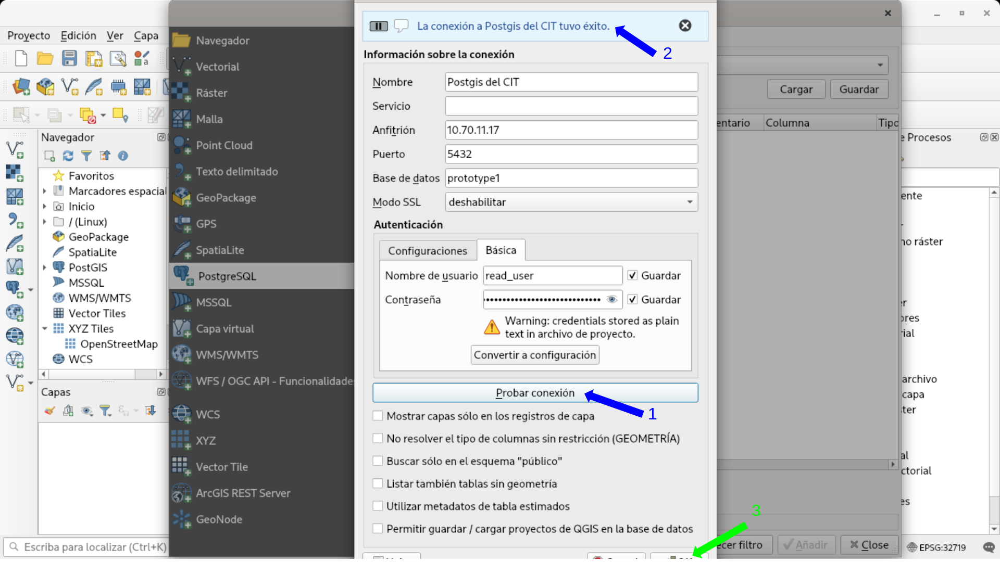
Antes de proceder a cargar mapas, es bueno revisar que los datos que ingresamos estén correctos, para eso hacemos click al botón “Probar conexión” y después de un poco de tiempo debería aparecer un mensaje indicando que la conexión fue exitosa.
En caso de que falle, intentar volver a escribir y verificar los datos tanto del servidor como las credenciales, si aun así no se logra la conexión, comunicarse con TI.
Finalmente vamos a hacer click para guardar la conexión.
Si decidimos guardar las credenciales aparecerá el siguiente mensaje:
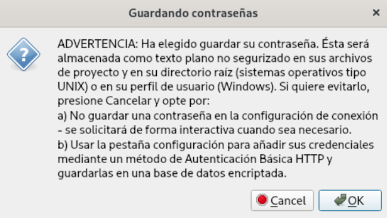
QGIS guarda los datos en un archivo, tal cual, eso causa que cualquier persona con acceso al computador pueda recuperar las credenciales, por lo que se debe tener precaución.
Antes que guiarnos por el miedo, podemos tomar las siguientes precauciones:
- Mantengamos el computador con clave
- Evitar que personas ajenas tengan acceso al computador
- Si roban el computador, avisar al área de TI para cambiar las claves
Nada es perfecto, sin embargo obtenemos un gran margen de seguridad manteniendo estas consideraciones.
Por si lo notan, incluso en caso de perder el PC es posible mantener la información segura solo con un cambio de clave del servidor, a diferencia de mantener archivos en el PC que usualmente son más vulnerables.
Con esto, hemos guardado la conexión y podemos acceder al servidor y su base de datos.
2.1.2 Cargar mapas desde PostGIS
Cargar mapas es bastante simple, muy similar a un archivo una vez que realizamos los procedimientos previos.
2.1.2.1 Conectarse al servidor
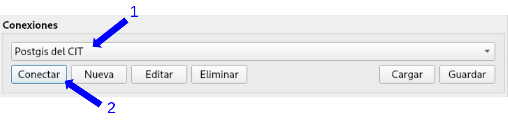
- Seleccionamos la conexión, tendrá el nombre que elegimos en la sección anterior.
- Seleccionamos “Conectar”, si no guardamos el usuario y/o clave del servidor, las volverá a solicitar.
2.1.2.2 Seleccionar y añadir Mapas
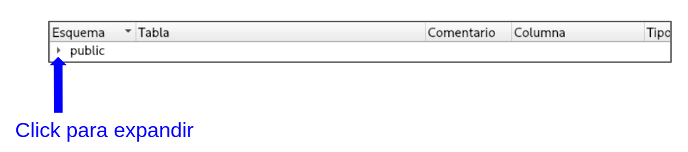
Con la conexión realizada veremos una lista con los esquemas del servidor, como idea general, cada esquema es una carpeta que contiene varios shp o mapas, ayuda a ordenar y clasificar, por defecto, los servidores usan el esquema “public” para guardar todo ahí a menos que indiquemos otro.
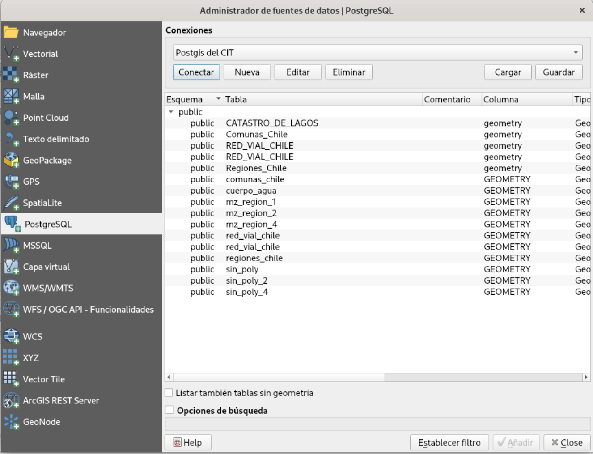
Al expandir el esquema, podremos ver todos los mapas que contiene, ahora solo tenemos que añadir los que deseamos ver en QGIS.
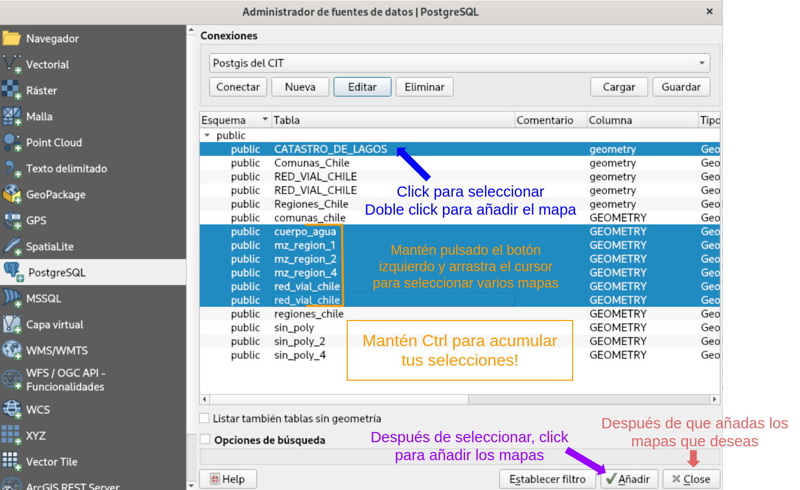
Como podemos notar, tenemos varias formas de seleccionar mapas:
- Click a un mapa.
- Mantener el botón izquierdo del mouse y arrastrarlo, se seleccionarán todos los mapas por los que pasemos.
Si además mantenemos la tecla “Ctrl”, podemos añadir nuevas selecciones de mapas, manteniendo los mapas ya seleccionados.
Una vez seleccionamos los mapas de interés, hacemos click al botón “Añadir”, la ventana no se cerrará por si quieres añadir más mapas aún.
Es posible seleccionar directamente el esquema “public” o el que desees y añadir todos sus mapas a QGIS.
Una vez con todos los mapas cargados hacemos click en “Close” para salir de la interfaz para añadir mapas.